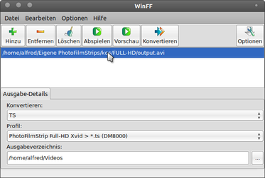

PhotoFilmStrip
Dieser Artikel wurde für die folgenden Ubuntu-Versionen getestet:
Ubuntu 14.04 Trusty Tahr
Zum Verständnis dieses Artikels sind folgende Seiten hilfreich:
 PhotoFilmStrip
PhotoFilmStrip 
 erstellt Videoclips aus JPG-Bildern in nur drei Schritten: Bilder auswählen, Bewegungspfad festlegen und anschließend das Video erzeugen lassen. Der Bewegungspfad ist auch als Ken Burns-Effekt bekannt.
erstellt Videoclips aus JPG-Bildern in nur drei Schritten: Bilder auswählen, Bewegungspfad festlegen und anschließend das Video erzeugen lassen. Der Bewegungspfad ist auch als Ken Burns-Effekt bekannt.
Als Ausgabeformate stehen VCD, SVCD, DVD und HD zur Verfügung. Im Gegensatz zu anderen Programmen bietet PhotoFilmStrip auch die Möglichkeit, die Slideshow in FULL-HD Auflösung (1920×1080) zu erzeugen. Weiterhin kann das Video mit einer Audiodatei unterlegt und mit Untertiteln ausgestattet werden.
Das auf Python basierende Programm steht neben Linux auch für Windows zur Verfügung. Alternative Programme sind im Artikel Diashows erstellen zu finden.
Installation¶
 PhotoFilmStrip kann bis einschließlich Ubuntu 14.04 direkt aus den offiziellen Paketquellen installiert [1] werden. Folgendes Paket wird benötigt:
PhotoFilmStrip kann bis einschließlich Ubuntu 14.04 direkt aus den offiziellen Paketquellen installiert [1] werden. Folgendes Paket wird benötigt:
photofilmstrip (universe)
 mit apturl
mit apturl
Paketliste zum Kopieren:
sudo apt-get install photofilmstrip
sudo aptitude install photofilmstrip
Fremdpaket¶
Die aktuellste Version kann auch als Fremdpaket  (.deb) heruntergeladen und manuell installiert [1] werden. Allerdings muss man beachten, dass das Programm den MEncoder als Abhängigkeit zwingend voraussetzt.
(.deb) heruntergeladen und manuell installiert [1] werden. Allerdings muss man beachten, dass das Programm den MEncoder als Abhängigkeit zwingend voraussetzt.
Hinweis!
Fremdpakete können das System gefährden.
Bedienung¶
Anschließend ist das Programm je nach Ubuntu-Version im Anwendungsmenü unter "Multimedia -> PhotoFilmStrip" oder "Unterhaltungsmedien -> PhotoFilmStrip" zu finden [2]. Soll eine andere Sprache als die Systemsprache verwendet werden, kann man diese nach dem Programmstart über "Hilfe -> Sprache" auswählen.
PhotoFilmStrip arbeitet mit "Projekten". Eine solche Projektdatei enthält Informationen über die enthaltenen Bilder, das gewünschte Seitenverhältnis des späteren Videos, evtl. Effekte, usw. und kann gespeichert bzw. wieder geöffnet werden. Die Endung lautet .pfs.
Vor dem Import von Bildern muss man zuerst ein neues Projekt anlegen (siehe Abbildung). Achtung: das Seitenverhältnis kann später nicht mehr verändert werden!
Experten-Info:
Technisch gesehen ist eine Projektdatei eine SQLite-Datenbank.
Bilder¶
Bilder können entweder über die Schaltfläche oder per Drag'n'Drop hinzugefügt werden. Am unteren Fensterrand werden die importierten Bilder in einem Filmstreifen dargestellt. Kleine Symbole ermöglichen eine Umsortierung der Reihenfolge oder das Entfernen des markierten Bildes.
Bilder werden normalerweise unter Berücksichtigung ihrer Exif-Daten automatisch gedreht. Da manche Kameras keinen Sensor besitzen, um die Bildlage (Quer- bzw. Hochformat) zu speichern, können Bilder auch manuell gedreht werden.
Bewegungspfad¶
Das im Filmstreifen markierte Bild wird im Programmfenster zweimal wiederholt, um den Bewegungspfad (Ken Burns-Effekt) zu manipulieren. Auf der linken Seite wird mit einem Rahmen die Ausgangsgröße dargestellt, rechts sieht man den Zustand kurz vor dem Wechsel zum nächsten Bild (im Regelfall ohne Rahmen, was der Originalgröße entspricht). Die jeweiligen Rahmen können bei gedrückter linker Maustaste  in der Größe angepasst oder positioniert werden, das Mausrad
in der Größe angepasst oder positioniert werden, das Mausrad  ändert die Größe des Rahmens. In der Mitte zwischen den Bildern sind weitere Funktionen untergebracht, sich auf den Bewegungspfad beziehen.
ändert die Größe des Rahmens. In der Mitte zwischen den Bildern sind weitere Funktionen untergebracht, sich auf den Bewegungspfad beziehen.
Wer keinen Bewegungspfad haben möchte, zieht die angezeigten Rahmen solange nach außen, bis sie sich mit der Originalgröße decken. Dieser Vorgang muss für jedes Einzelbild wiederholt werden.
Effekte¶
Neben dem Bewegungspfad stehen für Einzelbilder weitere Effekte wie
Schwarz/Weiss (S/W) und
Sepia-Färbung
zur Verfügung. Auch der Bildwechsel kann beeinflusst werden (Überblenden, Rollen, ohne).
Untertitel¶
Zu einem Bild kann ein Kommentar angegeben werden. Diese Kommentare werden in eine Untertitel-Datei geschrieben, die im SubRip-Format als .srt-Datei im Ordner der Videodatei erstellt wird. Beim Abspielen des Videos tauchen diese Kommentare dann am unteren Rand auf.
Untertitel können innerhalb des Programms nicht formatiert werden. Allerdings lassen sich beispielsweise Auszeichnungen wie fett, kursiv oder die Schriftfarbe anpassen, wenn man die .srt-Datei nachträglich editiert. Achtung: diese Änderungen werden beim erneuten Rendern des Videos überschrieben!
| Beispiele zur Formatierung von SubRip-Untertiteln | |
| Syntax | Ergebnis |
<b>text</b> | fett |
<i>text</i> | kursiv |
<u>text</u> | unterstrichen |
<font color="#00ff00">text</font> | grüner Text |
Man sollte aber berücksichtigen, dass nicht alle VideoPlayer diese Formatierungen auch korrekt anzeigen können (manche zeigen auch gar keine Untertitel an). Diese Tabelle gibt einige Hinweise. Teilweise gibt es zusätzlich Probleme bei der Anzeige von Umlauten. Dann kann es helfen, den in der Untertiteldatei verwendeten Zeichensatz zu ändern (z.B. von UTF-8 auf ISO-8859-1).
Hinweis:
Damit die Untertiteldatei funktioniert, muss sie sich im selben Ordner wie das dazugehörige Video befinden und den gleichen Namen wie die Videodatei haben.
Tonspur¶
Der Begriff "Tonspur" ist übertrieben. Man kann aber eine Audiodatei als Hintergrundmusik auswählen. Das Problem, dass die Audiodatei länger als das Video ist, kann auf zwei Wegen angegangen werden (die auch kombiniert werden können):
Kürzen der Audiodatei mit einem externen Editor (z.B. Audacity)
die Länge des Videos automatisch an die der Audiodatei anpassen. Dazu gibt man als "Total length" die Audiodatei in den Projekteinstellungen (siehe oben) an.
Welche Audioformate vom Programm berücksichtigt werden, ist nicht bekannt. Ein Test mit einer MP3- und einer OGA-Datei (OGG Audio) verlief erfolgreich.
Filmstreifen erstellen¶
Über den Menüpunkt "Extras -> Filmstreifen erstellen" wird ein Video mit den gewählten Übergängen und Effekten mit Hilfe von MEncoder erstellt. Über "Profil" wählt man das Zielmedium aus:
VCD
SVCD
DVD
Medium
HD
FULL-HD
Neben dieser Auswahl stehen die folgenden Formate zur Verfügung:
Einzelbilder
MPEG4-XVid/MP3 (AVI)
MPEG4-XVid/AC3 (AVI)
MPEG(1/2)-Video (MPG; kein Ton, keine Untertitel!)
Flash Video (FLV)
Motion-JPEG (AVI)
Auch die Fernsehnorm (in Deutschland ist PAL üblich) ist einstellbar. Um die zeitaufwendige Erstellung des Videos (Rendern) abzukürzen und die Auswirkungen bestimmter Einstellungen auszuprobieren, kann der Entwurfsmodus benutzt werden.
Über die Schaltfläche "Batch Auftrag" lässt sich ein Shell-Script erzeugen, um die Videoerstellung zu einem späteren Zeitpunkt auszuführen. Damit man das Script auch aufrufen kann, muss es unter Umständen noch ausführbar gemacht werden [3].
Nach dem Erstellen des Videos wird man gefragt, ob
das Video abgespielt werden soll
der Ordner mit dem Video geöffnet werden soll
oder "nichts" dergleichen passieren soll
Das fertige Video wird in einem Unterordner des Projektordners gespeichert, der den Namen des jeweiligen Profils trägt.
Erstellen einer DVD¶
Das Erstellen einer Video-DVD ist mit PhotoFilmStrip nicht möglich. Wer sich dafür interessiert, findet im Artikel DVD-Authoring weitere Informationen. Empfehlenswert ist auch der Artikel Grundlagen der Videobearbeitung.
Sonstiges¶
Programmhilfe¶
Die Taste F1 öffnet eine (englische) Hilfe zur Programmbedienung.
Einstellungen¶
Das Programm legt eine versteckte Datei ~/.PhotoFilmStrip an, die Informationen über die zuletzt benutzen Projekte und Pfade enthält.
Aktualisierungs-Information¶
Sobald eine neue Programmversion vorliegt, wird man darüber beim Programmstart automatisch informiert.
Diaschau in Full-HD Auflösung (TS-Datenstrom für die Dreambox DM 8000)¶
Getestet wurde das Ergebnis mit einer DM8000PVR. Die Diashow ist abspielbar mit dem DM8000 eigenen Mediaplayer. Der Zugriff über NFS auf ein zentrales NAS wurde erfolgreich getestet.
Zuerst erstellt man eine Diaschau mit den Parametern:
Full-HD
PAL
MPEG4-XVid/MP3 (AVI)
Es entsteht eine AVI-Datei um die 2 GiB Größe (194 Bilder/ca. 22 Min.).
Es gibt zwei Wege, um aus der output.avi aufgrund des nicht unterstützten Formats "XVID MPEG-4 in FULL-HD" der DM8000, den benötigten MPEG-2 TS-Datenstrom für die Dreambox 8000 zu erzeugen:
Über die Kommandozeile mit FFMpeg:
ffmpeg -i output.avi -s 1440x1080 -sameq -aspect 4:3 -r 30 -acodec copy -f mpegts output.ts
Alternativ kann man auch WinFF zur Konvertierung einsetzen. Dazu übernimmt man über "Bearbeiten -> Profile -> Profil erstellen" die Angaben aus der Abbildung unten. Abspeichern mit "Hinzu/Aktualisieren" und "Speichern". Nun das Profil auswählen, die output.avi ins Programmfenster ziehen, "Konvertieren" drücken und warten. Das Ergebnis ist eine 6,5 GiB große TS-Datei (194 Bilder mit 1440x1080 Px /ca. 22 Min.).
| Profil erstellen |
|  |
| Konvertierung mit WinFF |
Links¶
Getdeb
- Fremdquelle
PhotoFilmStrip - Diashows mit Linux erstellen
- Blogbeitrag 08/2011Diashows erstellen
 Übersichtsartikel
ÜbersichtsartikelVideobearbeitung
wenn die Ansprüche steigen...
- Erstellt mit Inyoka
-
 2004 – 2017 ubuntuusers.de • Einige Rechte vorbehalten
2004 – 2017 ubuntuusers.de • Einige Rechte vorbehalten
Lizenz • Kontakt • Datenschutz • Impressum • Serverstatus -
Serverhousing gespendet von